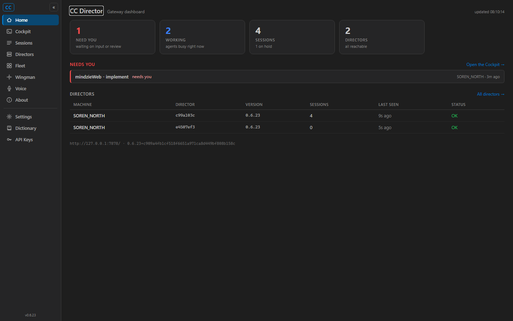
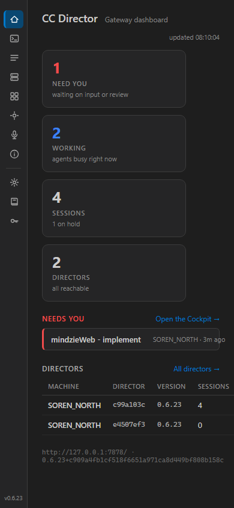
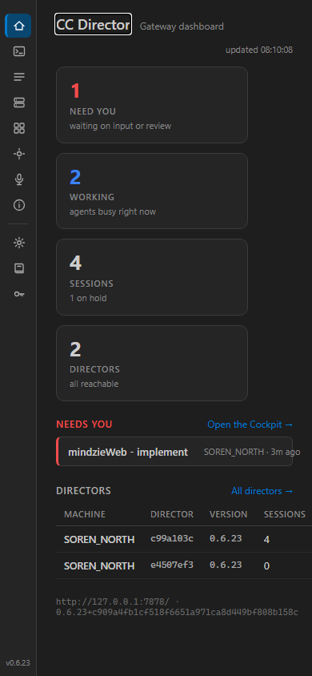
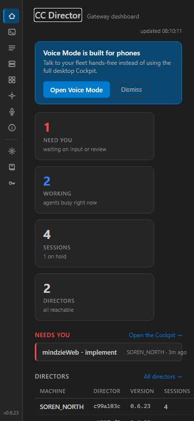

VERIFIED - all acceptance criteria met. PASS.
0c26c51 in an isolated git worktree (cc-director-wt-427).CcDirector.Cockpit from that checkout: Build succeeded. 0 Warning(s), 0 Error(s).http://127.0.0.1:7485 (a private port, not the shared 7470)
in the Development environment so the Blazor interactive circuit and scoped assets serve correctly.| # | Criterion | Expected | Actual | Result |
|---|---|---|---|---|
| 1 | On a phone-sized viewport / mobile user-agent, the Cockpit home shows an "Open Voice Mode" prompt linking to /voice. |
Banner visible; "Open Voice Mode" link has href=/voice. |
Banner "Voice Mode is built for phones" shown; link href=/voice. cockpitMobile.evaluate() returned {isMobile:true, dismissed:false}. |
PASS |
| 2 | On desktop, the prompt does not appear. | No .voice-offer banner at desktop width / UA. |
No banner present; dashboard renders normally. | PASS |
| 3 | Dismissing the prompt is remembered (does not reappear on next visit in the same browser). | Banner gone after clicking Dismiss AND still gone after a reload of the same browser; a fresh browser (no flag) shows it again. | Gone after Dismiss; still gone after reload (localStorage cockpit.voiceOffer.dismissed=1 persisted); control: a fresh phone context with no flag showed the banner again. |
PASS |




docs/cencon/ doc update required.cockpit-mobile.js): mobile UA OR viewport ≤ 720px; localStorage cockpit.voiceOffer.dismissed; storage-unavailable falls through to "show" (offer is non-destructive). Offer, not forced redirect - matches issue scope.